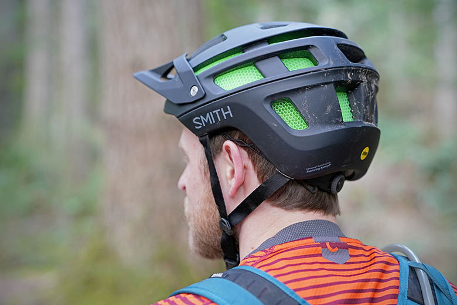
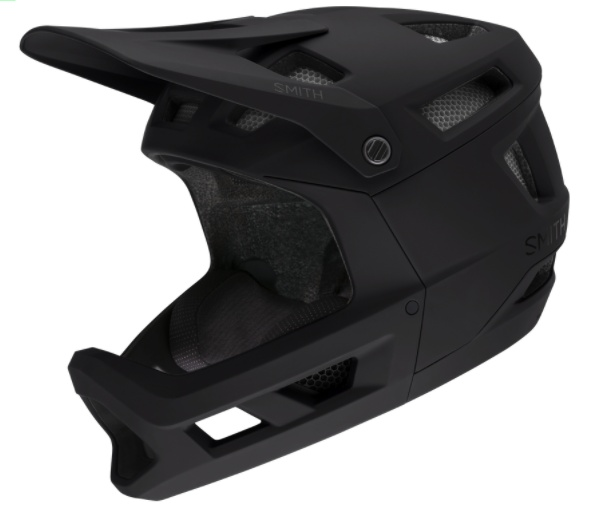
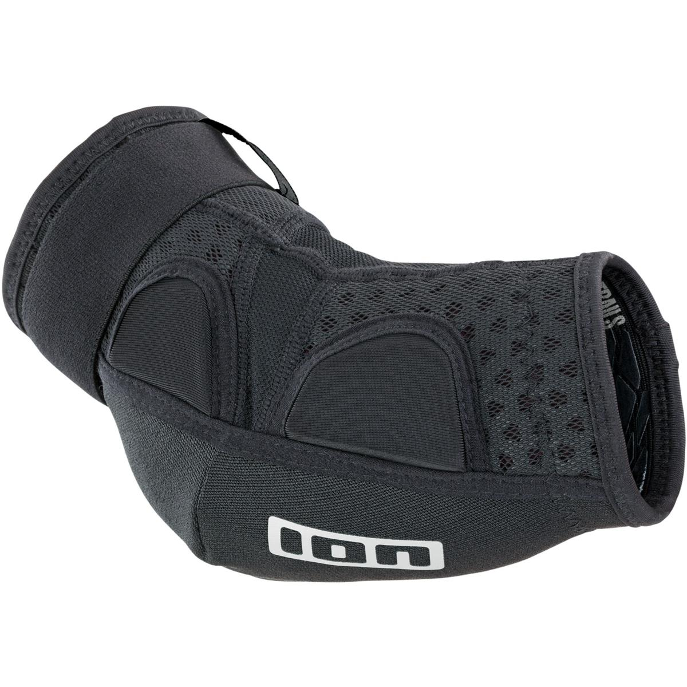
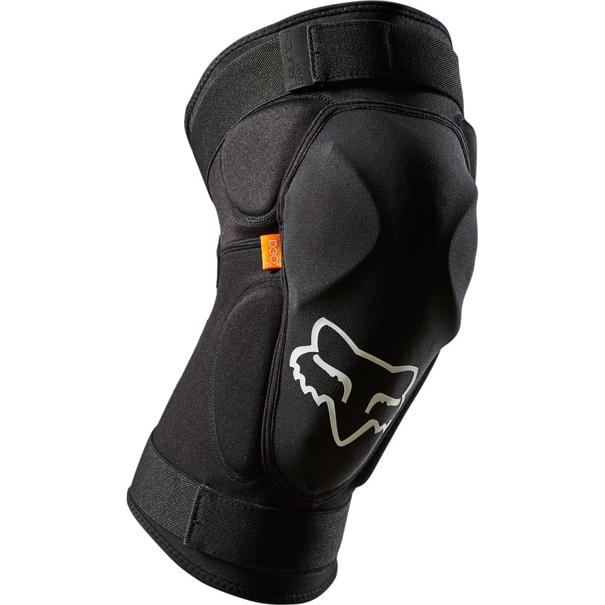
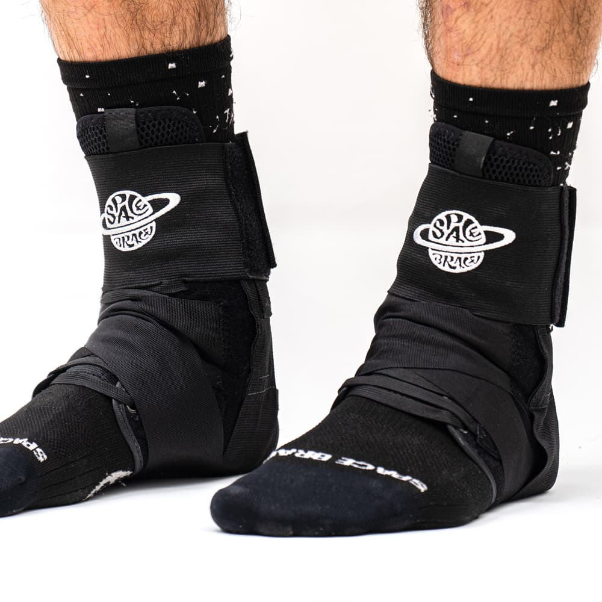
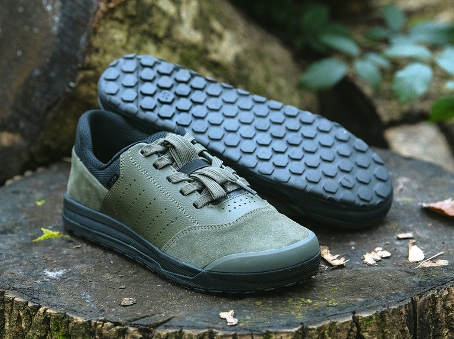

Gear!
Biking can be an extremely dangerous sport, it is best that you are prepared for what can happen with protective gear. This gear can act as a preventor of injuries and can distribute energies from crashes away from points of injury
HELMETS
Concussions are very serious injuries. To help prevent them, wear a helmet. Ones with systems to prevent rotational velocity on impact are best. Look for helmets with MIPS or WAVECEL systems for the best protection, and stay away from one time crash EPS!

If you are doing more technical riding, it can be a good idea to wear a full face helmet to protect the rest of your head.

PADS
It can be helpful to wear pads on joints that are vulnerable to injury like ankles, knees, and elbows

Make sure the pad of the elbow pad lines up with your elbow bone and continues down your forearm.

There are different styles of knee pad. Harder knee surfaces are better for harder riding surfaces, and vice versa. Find what works best for you.

SpaceBrace makes the best ankle protection for biking. Making sure that your ankles are stable can save you months in injury time.
SHOES
Make sure that you are wearing appropriate riding shoes. If you have clipless pedals, wear the shoes that match those pedals. If running flat pedals, wear a shoe with a flat bottom like those pictured below, as it will provide more grip through more surface area on the pedal.
